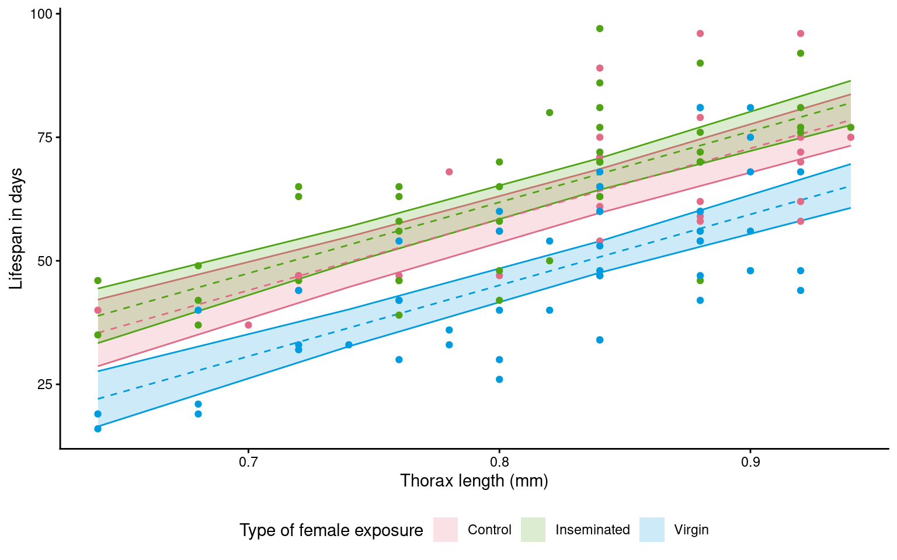
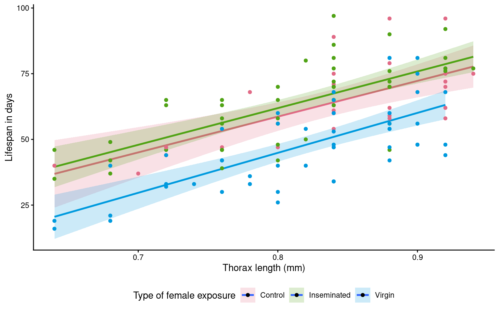
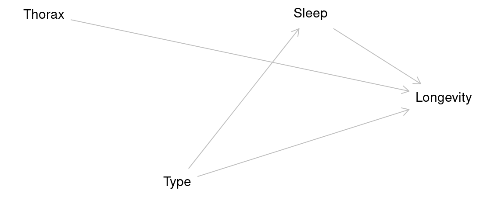

20 Linear Models
20.1 The data
We are introduced to the fruitfly dataset (Partridge and Farquhar (1981))[https://nature.com/articles/294580a0]. From our understanding of sexual selection and reproductive biology in fruit flies, we know there is a well established ‘cost’ to reproduction in terms of reduced longevity for female fruitflies. The data from this experiment is designed to test whether increased sexual activity affects the lifespan of male fruitflies.
The flies used were an outbred stock, sexual activity was manipulated by supplying males with either new virgin females each day, previously mated females ( Inseminated, so remating rates are lower), or provide no females at all (Control). All groups were otherwise treated identically.
type: type of female companion (virgin, inseminated, control(partners = 0))
longevity: lifespan in days
thorax: length of thorax in micrometres (a proxy for body size)
sleep: percentage of the day spent sleeping
What order will R organise the three type categories?
20.1.1 Hypotheses
- Flies paired with non-virgin females do not live as long, they expend more energy trying to mate with previously mated females.
lm(longevity ~ type, data = dros_clean)
20.2 Checking the data
A quick intro to a general overview
This is a full two-by-two plot of the entire dataset, but you should try and follow this up with some specific plots.
Your turn
- Make a Boxplot / Density distribution of longevity split by the female type with which males have been paired

20.3 Designing a model
In this section, we explore how to construct a statistical model to analyse biological data. Specifically, we will build a linear model to examine the effects of mating type on longevity in Drosophila melanogaster. .
Using the lm() function in R, we fit a model to our cleaned dataset, and generate a summary of the results. This approach allows us to assess the significance of each predictor and interpret how these factors influence longevity. By the end of this section, you will understand how to structure a model, choose appropriate variables, and interpret statistical outputs.
Call:
lm(formula = longevity ~ type, data = dros_clean)
Residuals:
Min 1Q Median 3Q Max
-31.74 -13.74 0.26 11.44 33.26
Coefficients:
Estimate Std. Error t value Pr(>|t|)
(Intercept) 63.560 3.158 20.130 < 2e-16 ***
typeInseminated 0.520 3.867 0.134 0.893
typeVirgin -15.820 3.867 -4.091 7.75e-05 ***
---
Signif. codes: 0 '***' 0.001 '**' 0.01 '*' 0.05 '.' 0.1 ' ' 1
Residual standard error: 15.79 on 122 degrees of freedom
Multiple R-squared: 0.2051, Adjusted R-squared: 0.1921
F-statistic: 15.74 on 2 and 122 DF, p-value: 8.305e-0720.4 Interpreting a model
20.4.1 Call : What model was fitted
- `lm(formula = longevity ~ type, data = dros_clean)`
20.4.2 Residuals: How well the model fits
Min 1Q Median 3Q Max
-31.74 -13.74 0.26 11.44 33.26 20.4.3 Coefficients:
Estimate Std. Error t value Pr(>|t|)
(Intercept) 63.560 3.158 20.130 < 2e-16 ***
typeInseminated 0.520 3.867 0.134 0.893
typeVirgin -15.820 3.867 -4.091 7.75e-05 ***| Term | Interpretation |
|---|---|
| (Intercept) | Mean longevity for the reference group (here: Mated males, if that’s baseline). → ≈ 63.6 days |
| typeInseminated | Difference from baseline: ≈ +0.5 days (ns, p = 0.893) |
| typeVirgin | Difference from baseline: ≈ −15.8 days (p < 0.001) → Virgins live ~16 days shorter |
20.4.4 Model fit
Residual SE: 15.79 on 122 DF
Multiple R-squared: 0.2051
Adjusted R-squared: 0.1921
F-statistic: 15.74 on 2 and 122 DF, p-value: 8.31e-07| Metric | Meaning | Interpretation |
|---|---|---|
| Residual SE | Typical deviation of observations from model predictions (≈ 15.8 days) | Smaller = better fit |
| R² = 0.205 | % of variance in longevity explained by mating type | ≈ 20% of variation explained |
| Adjusted R² | Adjusts for # predictors | Still 0.19 → stable |
| F-test | “Does type matter overall?” |
Yes (p < 0.001) |
20.5 Confidence intervals
When we produce a model fit - it is useful to think in terms of confidence intervals and estimate differences rather than just p-values.
A 95% confidence interval give us our confidence in having captured the true difference between groups at p = 0.05
| term | estimate | std.error | statistic | p.value | conf.low | conf.high |
|---|---|---|---|---|---|---|
| (Intercept) | 63.56 | 3.157477 | 20.1299982 | 0.0000000 | 57.309460 | 69.810541 |
| typeInseminated | 0.52 | 3.867103 | 0.1344676 | 0.8932544 | -7.135317 | 8.175317 |
| typeVirgin | -15.82 | 3.867103 | -4.0909173 | 0.0000775 | -23.475317 | -8.164683 |

| Term | Estimate | 95% CI | Interpretation |
|---|---|---|---|
| (Intercept) | 63.6 | (57.3, 69.8) | Baseline longevity — flies in the reference group (mated males) live about 64 days on average. We are 95% confident the true mean lies between 57 and 70 days. |
| typeInseminated | 0.52 | (−7.1, 8.2) | Flies with inseminated partners live about 0.5 days longer than the reference group, but the 95% CI spans both negative and positive values — from −7 to +8 days — indicating no clear difference. |
| typeVirgin | −15.8 | (−23.5, −8.2) | Flies paired with virgin partners live roughly 16 days shorter on average. The 95% CI (−23.5 to −8.2) does not include zero, within our confidence intervals we know that the true difference is at least 8.2 days |
Regression analysis
This will produce a regression analysis - how does this change the way we interpret the coefficients?
Call:
lm(formula = longevity ~ thorax, data = dros_clean)
Residuals:
Min 1Q Median 3Q Max
-28.415 -9.961 1.132 9.265 36.812
Coefficients:
Estimate Std. Error t value Pr(>|t|)
(Intercept) -61.05 13.00 -4.695 7.0e-06 ***
thorax 144.33 15.77 9.152 1.5e-15 ***
---
Signif. codes: 0 '***' 0.001 '**' 0.01 '*' 0.05 '.' 0.1 ' ' 1
Residual standard error: 13.6 on 123 degrees of freedom
Multiple R-squared: 0.4051, Adjusted R-squared: 0.4003
F-statistic: 83.76 on 1 and 123 DF, p-value: 1.497e-15Unlike a test of difference - when we include a continuous predictor it changes our intercept and coefficient
Intercept - value of y when x = 0. The average longevity when thorax = 0.
Coefficient - how much longevity increases for every unit increase in thorax.
20.6 Analysis of Covariance
In a basic linear model, we often start by comparing group means — for example:
\[ \text{longevity}_i = \beta_0 + \beta_1 \, \text{type}_i + \varepsilon_i \]
This model assumes that differences in longevity are entirely due to type (e.g., mating partner).
But in real data, other variables may also influence the outcome — for example, body size might affect how long flies live.
If mean body size happens to vary slightly between groups, failing to include it could confound our estimate of the effect of type.
By adding it as a covariate, we adjust for this additional source of variation:
\[ \text{longevity}_i = \beta_0 + \beta_1 \, \text{type}_i + \beta_2 \, \text{thorax}_i + \varepsilon_i \]
20.6.1 Interpretation
The coefficient 𝛽1 represents the effect of mating type, after adjusting for body size.
The coefficient 𝛽2 represents how longevity changes with body size, holding type constant.
Including covariates often reduces residual variation and improves model fit.
Your turn
Call:
lm(formula = longevity ~ type + thorax, data = dros_clean)
Residuals:
Min 1Q Median 3Q Max
-27.330 -6.803 -2.531 7.143 29.415
Coefficients:
Estimate Std. Error t value Pr(>|t|)
(Intercept) -56.521 11.149 -5.069 1.45e-06 ***
typeInseminated 3.450 2.759 1.250 0.214
typeVirgin -13.349 2.756 -4.845 3.80e-06 ***
thorax 143.638 13.064 10.995 < 2e-16 ***
---
Signif. codes: 0 '***' 0.001 '**' 0.01 '*' 0.05 '.' 0.1 ' ' 1
Residual standard error: 11.21 on 121 degrees of freedom
Multiple R-squared: 0.6024, Adjusted R-squared: 0.5925
F-statistic: 61.1 on 3 and 121 DF, p-value: < 2.2e-16When we use continuous predictors, the intercept becomes the expected value of our outcome (longevity), when all predictors are 0. This can make the intercept an unrealistic value.
One way around this is to “center” the continuous predictors - so that 0 now becomes the mean value of the predictor
Call:
lm(formula = longevity ~ type + thorax_c, data = dros_clean)
Residuals:
Min 1Q Median 3Q Max
-27.330 -6.803 -2.531 7.143 29.415
Coefficients:
Estimate Std. Error t value Pr(>|t|)
(Intercept) 61.400 2.251 27.277 < 2e-16 ***
typeInseminated 3.450 2.759 1.250 0.214
typeVirgin -13.349 2.756 -4.845 3.8e-06 ***
thorax_c 143.638 13.064 10.995 < 2e-16 ***
---
Signif. codes: 0 '***' 0.001 '**' 0.01 '*' 0.05 '.' 0.1 ' ' 1
Residual standard error: 11.21 on 121 degrees of freedom
Multiple R-squared: 0.6024, Adjusted R-squared: 0.5925
F-statistic: 61.1 on 3 and 121 DF, p-value: < 2.2e-1620.7 Compare the models
Compare to the simpler model:
| Res.Df | RSS | Df | Sum of Sq | F | Pr(>F) |
|---|---|---|---|---|---|
| 122 | 30407.46 | NA | NA | NA | NA |
| 121 | 15210.85 | 1 | 15196.61 | 120.8868 | 0 |
The ANOVA tests whether adding body_size significantly improves the model.
20.8 Test for interaction
Sometimes, the relationship between a covariate and the outcome differs between groups.
To test this, include an interaction term:
\[ \text{longevity}_i = \beta_0 + \beta_1 \, \text{type}_i + \beta_2 \, \text{body\_size}_i + \beta_3 \, (\text{type}_i \times \text{body\_size}_i) + \varepsilon_i \]
This allows the slope of body size to vary by type — in other words, the effect of size depends on mating partner.
Call:
lm(formula = longevity ~ type + thorax + type:thorax, data = dros_clean)
Residuals:
Min 1Q Median 3Q Max
-27.073 -6.214 -2.487 6.896 29.513
Coefficients:
Estimate Std. Error t value Pr(>|t|)
(Intercept) -50.2420 22.9821 -2.186 0.0308 *
typeInseminated 0.4241 28.8399 0.015 0.9883
typeVirgin -26.5521 28.8348 -0.921 0.3590
thorax 136.1268 27.3575 4.976 2.21e-06 ***
typeInseminated:thorax 3.5224 34.6547 0.102 0.9192
typeVirgin:thorax 15.9666 34.5973 0.461 0.6453
---
Signif. codes: 0 '***' 0.001 '**' 0.01 '*' 0.05 '.' 0.1 ' ' 1
Residual standard error: 11.29 on 119 degrees of freedom
Multiple R-squared: 0.6033, Adjusted R-squared: 0.5866
F-statistic: 36.19 on 5 and 119 DF, p-value: < 2.2e-16- A significant interaction (𝛽3) means the relationship between body size and longevity is not the same across partner types.
Compare to the simpler model:
| Res.Df | RSS | Df | Sum of Sq | F | Pr(>F) |
|---|---|---|---|---|---|
| 121 | 15210.85 | NA | NA | NA | NA |
| 119 | 15176.42 | 2 | 34.42543 | 0.1349668 | 0.8738785 |
R compares the nested models via a likelihood ratio test (LRT):
flyls2 = simpler model (without interaction term)
flyls3 = full model (with interaction term)
The LRT evaluates:
H₀: β₃ = 0 (no interaction; same slope for all partner types)
H₁: β₃ ≠ 0 (interaction; slopes differ)
If the p-value is small (typically < 0.05), the more complex model explains significantly more variation — implying the interaction is meaningful.
20.9 Model checking
Before we can interpret the terms in our model, we should check to see if this is even a good way of fitting and measuring our data. We should check the assumptions of our model are being met.
R has ways to do this with the plot() function, but the performance packages Lüdecke et al. (2025) from easystats also gives nice residual checks:
Posterior Predictive Check – Assesses whether the model’s predicted values align well with the observed data, indicating good model fit.
Linearity Check – Ensures that the relationship between predictor variables and the outcome is approximately linear, a key assumption of linear regression.
Homogeneity of Variance Check – Tests whether residuals (errors) have constant variance across all levels of predictors, known as homoscedasticity.
Influential Observation Check – Identifies individual data points that have a disproportionately large impact on the model’s estimates.
Collinearity Check – Detects whether predictor variables are highly correlated with each other, which can distort model estimates and reduce interpretability.
Normality Check – Examines whether the residuals of the model follow a normal distribution, an assumption necessary for reliable inference in linear regression.
20.9.1 Homogeneity of variance
Question - IS the assumption of homogeneity of variance met?
Mostly - the reference line is fairly flat (there is a slight curve).
It looks as though there might be some increasing heterogeneity with larger values, though very minor.
VERDICT, pretty much ok, should be fine for making inferences.
With a slight curvature this could indicate that you might get a better fit with a transformation, or perhaps that there is a missing variable that if included in the model would improve the residuals. In this instance I wouldn’t be overly concerned. See here for a great explainer on intepreting residuals1.
20.9.2 Normality of residuals
Yes - the QQplot looks pretty good, a very minor indication of a right skew, but nothing to worry about.
[Interpreting QQ plots][What is a Quantile-Quantile (QQ) plot?]
20.9.3 Collinearity
Question - IS their an issue with Collinearity?
What does it mean to have (multi)collinearity?
This is when one or more predictors are correlated - leading to increased uncertainty about their contributions to the outcome variable.
The result is wider standard error and confidence intervals.
While there are many discussions about what can be done with multicollinearity - I subscribed to the views outlined here.
It should be reported - but that’s it - it represents genuine uncertainty around the contributions of your predictors.
20.10 Estimating means and comparisons
Using the emmeans package is a very easy way to produce the estimate mean values (rather than mean differences) for different categories emmeans.
type thorax emmean SE df lower.CL upper.CL
Control 0.821 61.4 2.25 121 56.9 65.9
Inseminated 0.821 64.8 1.59 121 61.7 68.0
Virgin 0.821 48.1 1.59 121 44.9 51.2
Confidence level used: 0.95 If the term pairs() is included then it will also include post-hoc pairwise comparisons between all levels with a tukey test (adjustment for multiple comparisons) contrasts.
contrast estimate SE df t.ratio
Control thorax0.82096 - Inseminated thorax0.82096 -3.45 2.76 121 -1.250
Control thorax0.82096 - Virgin thorax0.82096 13.35 2.76 121 4.845
Inseminated thorax0.82096 - Virgin thorax0.82096 16.80 2.24 121 7.490
p.value
0.4261
<.0001
<.0001
P value adjustment: tukey method for comparing a family of 3 estimates For continuous variables (sleep and thorax) - emmeans has set these to the mean value within the dataset, so comparisons are constant between categories at the average value of all continuous variables. If we wish to model continuous predictions we need to specify these:
type thorax emmean SE df lower.CL upper.CL
Control 0.64 35.4 3.40 121 28.7 42.1
Inseminated 0.64 38.9 2.79 121 33.3 44.4
Virgin 0.64 22.1 2.82 121 16.5 27.6
Control 0.74 49.8 2.57 121 44.7 54.9
Inseminated 0.74 53.2 1.87 121 49.5 56.9
Virgin 0.74 36.4 1.89 121 32.7 40.2
Control 0.84 64.1 2.24 121 59.7 68.6
Inseminated 0.84 67.6 1.62 121 64.4 70.8
Virgin 0.84 50.8 1.61 121 47.6 54.0
Control 0.94 78.5 2.62 121 73.3 83.7
Inseminated 0.94 81.9 2.27 121 77.5 86.4
Virgin 0.94 65.1 2.24 121 60.7 69.6
Confidence level used: 0.95 20.11 Model visualisation
We can make visualisations of our models with ggplot()
# convert an emmeans object to tibble
continuous_means <- continuous_means |>
as_tibble()
# use the final model to produce model predictions set to the new constant sleep dataframe
ggplot(continuous_means,
aes(x=thorax,
y = emmean,
colour = type,
fill = type))+
geom_ribbon(aes(ymin=lower.CL,
ymax=upper.CL),
alpha = 0.2)+
geom_line(linetype = "dashed",
show.legend = FALSE)+
geom_point(data = dros_clean,
aes(x = thorax,
y = longevity),
show.legend = FALSE)+
scale_fill_discrete_qualitative() +
scale_colour_discrete_qualitative() +
labs(y = "Lifespan in days",
x = "Thorax length (mm)",
fill = "Type of female exposure")+
guides(colour = "none")+
theme_classic()+
theme(legend.position = "bottom")
Look at this figure made using geom_smooth
ggplot(dros_clean,
aes(x=thorax,
y = longevity,
colour = type,
fill = type))+
geom_smooth(method = "lm",
alpha = .2)+
geom_point()+
scale_fill_discrete_qualitative() +
scale_colour_discrete_qualitative() +
labs(y = "Lifespan in days",
x = "Thorax length (mm)",
fill = "Type of female exposure")+
guides(colour = "none")+
theme_classic()+
theme(legend.position = "bottom")
Question - Why is it different - and is this a problem?
This example also produces regression lines - but unlike our calcuated model plot where lines ran in parallel - here it is subtle but the regression lines aren’t quite parallel (The virgin line starts lower but is on a trend to crossover the other groups)
- Why? When we use
geom_smooth()it will by default calculate independent regressions for each group.
20.12 Model reporting
We have now generated a lot of information from our models - using confidence intervals we can make statements about measured differences and levels of uncertainty around our inferences.
Our control treatment of flies had a mean lifespan of 61.4 days [95%CI: 56.9 - 65.9] at the average thorax size of 0.82mm.
Thorax size was a significant predictor of longevity (t121 = 10.99, p<0.001), with every additional mm adding a minimum avergae of 11.7 days to lifespan (Estimate = 14.3 [11.7 - 16.9]).
Treatment (in the form of exposure to different female mating types) had a strong overall effect on longevity (F121~) = 121, p <0.001. Males paired with virgin flies lived an average of 13.3 days [7.9 - 18.8] less than control flies.
A post-hoc comparison (Tukey HSD) found that males paired with virgin lifes had reduced longevity compared to males paired with both Control and Inseminated females, there was no statisticall significant difference between males paired with Control and Inseminated females.
Overall the model explained 59% of the observed variance in lifespan (Adjusted R2 = 0.59).
20.13 Causal inference
A regression model can be used for prediction or for causal inference.
If your goal is to estimate the effect of a variable (e.g., the effect of mating partner on longevity), you must think carefully about which variables to control for and which to exclude.
20.13.1 Experimental design
Your experimental design is the foundation.
If you randomly assign treatments (e.g., mating partner type), randomization already balances other factors on average — you don’t need to adjust for everything.
-
But for small groups/studies there could be minor imbalances and including the term might help make more precise estimates.
- If the study is large enough body size differences should smooth out - perhaps it doesn’t need to be adjusted for?
Body size could moderate the treatment effect (change the way mating partner type affects longevity)
-
Variables measured after treatment (like sleep) should not be adjusted for if they’re potential mediators.
- The type of female a male is paired with might affect how much sleep he gets?

If we did include sleep in our models it might block part of the causal effect of type on longevity that flows through sleep.
Call:
lm(formula = longevity ~ type + thorax + sleep, data = dros_clean)
Residuals:
Min 1Q Median 3Q Max
-28.153 -6.836 -2.191 7.196 29.046
Coefficients:
Estimate Std. Error t value Pr(>|t|)
(Intercept) -56.04502 11.17882 -5.013 1.87e-06 ***
typeInseminated 3.62796 2.77122 1.309 0.193
typeVirgin -13.24603 2.76198 -4.796 4.70e-06 ***
thorax 144.43008 13.11616 11.012 < 2e-16 ***
sleep -0.05281 0.06383 -0.827 0.410
---
Signif. codes: 0 '***' 0.001 '**' 0.01 '*' 0.05 '.' 0.1 ' ' 1
Residual standard error: 11.23 on 120 degrees of freedom
Multiple R-squared: 0.6046, Adjusted R-squared: 0.5914
F-statistic: 45.88 on 4 and 120 DF, p-value: < 2.2e-16In this case we can see that the estimate of the effect of type on longevity has changed.
Our model now only estimates the effect of type on longevity that isn’t mediated by sleep.
20.13.2 Causality terms
| Variable type | Definition | Example | Include? | Why |
|---|---|---|---|---|
| Confounder | A variable that influences both the treatment and the outcome, creating a spurious association. | (None here; randomization removes them) | ✅ | Removes bias by blocking non-causal paths between treatment and outcome. |
| Mediator | A variable that lies on the causal path between treatment and outcome, transmitting part of the effect. | Sleep | 🚫 | Excluding it gives the total effect of treatment on outcome; including it estimates only the direct effect. |
| Precision covariate | A variable related to the outcome but not to treatment; not a confounder but helps explain residual variation. | Thorax | ✅ (optional) | Improves precision by reducing unexplained variance; doesn’t change the causal estimate. |
| Moderator | A variable that changes (modifies) the strength or direction of the treatment effect. | Thorax × Type | ✅ (if theory suggests) | Tests whether the effect of treatment depends on another factor (e.g., body size). |
Choosing which variables to include in a model requires careful thought because each term represents an assumption about the causal structure of the system. Confounders must be included to remove bias, mediators excluded if we want the total effect, and moderators or precision covariates added only when theory or design supports their relevance. In short, a good model reflects not just the data we have, but the experiment we designed and the biological relationships we believe exist.
https://www.qualtrics.com/support/stats-iq/analyses/regression-guides/interpreting-residual-plots-improve-regression/↩︎